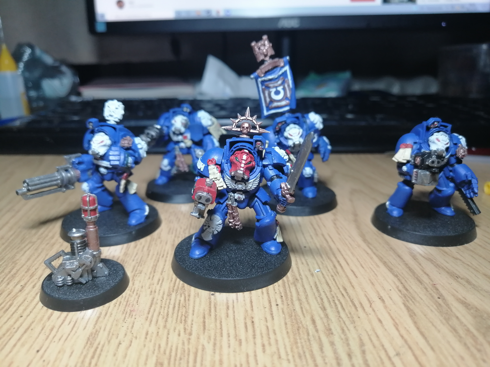

Ultramarines
Space marines were my first army which I painted. It's my favorite fraction in Warhammer 40k.
I chose Ultramarines chapter for paint marines because I like them lore and them color scheme.
We march for Macragge!

Space marines were my first army which I painted. It's my favorite fraction in Warhammer 40k.
I chose Ultramarines chapter for paint marines because I like them lore and them color scheme.